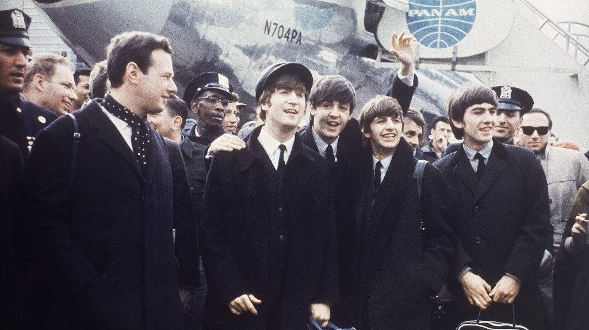

The Beatles
The Beatles fue una banda de rock muy reconocida de origen inglés que se mantuvo activa en la década de los años 60 y fue la más aclamada por todos en la historia de la música.
Por Giovanna Demaldé
La banda fue formada en Liverpool y en el año de 1962 fue constituida por John Lennon quien tocaba la guitarra rítmica y era vocalista, Paul McCartney quien tocaba el bajo y era también vocalista, por George Harrison quien tocaba la guitarra solista y era vocalista y por Ringo Starr quien tocaba la batería y era vocalista. The Beatles nació bajo la influencia del skiffle y el rock and roll de los años 50 y en años posteriores trabajó diferentes géneros musicales los cuales incluían desde las baladas pop hasta el rock psicodélico, agregando en ocasiones a sus trabajos algunos elementos clásicos de manera innovadora en sus propias canciones.
EVOLUCION MUSICAL
DE LOS BEATLES
Y SU HISTORIA
Gracias a la enorme popularidad que tuvo la banda y que dio paso a la moda de la “Beatlemanía”, esta banda musical se transformó al mismo tiempo que sus composiciones se volvieron más sofisticadas. Su influencia llegó a percibirse en las revoluciones sociales y culturales de la década de los 60’. La formación inicial de The Beatles constaba de 5 integrantes entre los cuales se encontraban incluidos Lennon, McCartney, Harrison, Stuart Sutcliffe en el bajo y Pete Best en la batería, la banda construyó su reputación en los clubes de Liverpool y de Hamburgo, sobre un periodo de tres años a partir de 1960; fue un año después que Sutcliffe abandonaría el grupo y por su parte, Best sería remplazado por Starr al año siguiente. Brian Epstein les ofrecería ser su representante lo que posteriormente los convertiría en un grupo profesional, contando además con un potencial musical mejorado gracias a la creatividad del productor George Martin, de este modo lograron un éxito comercial en el Reino unido dos años después de su iniciación y gracias a su sencillo “Love me Do”.
Fui el último en querer la separacion de The Beatles. Yo quería que nosotros siguiéramos como banda de gira y volver a estar juntos y tocar juntos
Paul McCartney
Fui el último en querer la separacion de The Beatles. Yo quería que nosotros siguiéramos como banda de gira y volver a estar juntos y tocar juntos
Paul McCartney
A partir de este momento estos fueron ganando popularidad internacional a lo largo de los siguientes años, en los cuales llevaron a cabo un gran número de giras hasta el año de 1966, en el cual detuvieron su actividad musical para dedicarse a la grabación de su música en el estudio, hasta su disolución 10 años después de su creación.
Durante sus años de trabajo en el estudio, los Beatles crearon algunos de sus mejores materiales, incluyendo el álbum Sgt. Pepper’s Lonely Hearts Club Band, tres años antes de su separación, dicho álbum fue considerado por muchas personas como una verdadera obra maestra. Después de su separación, los integrantes de The Beatles iniciaron exitosos proyectos independientes, sin embargo Lennon fue asesinado en las afueras de su casa en Nueva York en 1980 y Harrison falleció en el 2001; por su parte Paul McCartney y Ringo Starr aún permanecen activos.